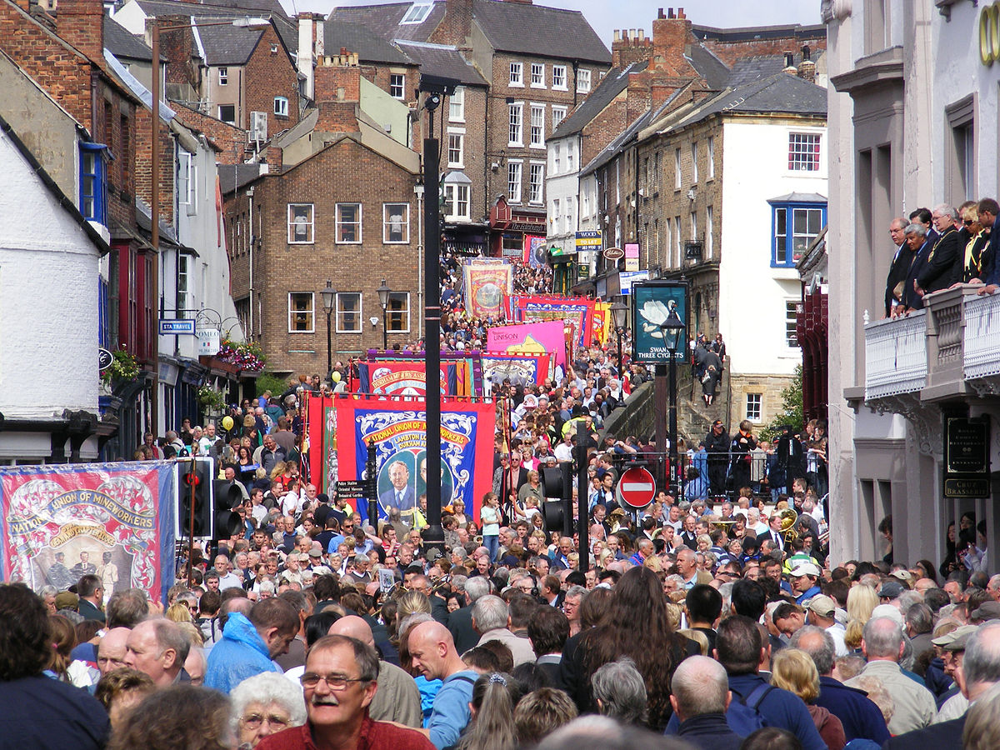

Durham Miners Gala
The gala is held annualy on the second Saturday in July in the city of Durham. Also known as 'the big meeting' it attracts many of the residents from around Durham as well as visitors from far and wide.
Durham Miners Association website